Logo Bank24
Znak „B” z dwóch otwartych obiegów i wspólnego pionu. Zwarty logotyp Bank24, wyważone proporcje i ciemny teal nadają identyfikacji spokojny, profesjonalny charakter.
Monogram
Pobierz znak SVG
Jeden kolor
Pobierz logo monochromatyczne
Na granacie


Identyfikacja fintech
Granat wyznacza główne akcje i hierarchię. Ciemny teal podkreśla znak, linki i zaznaczenia; mięta stanowi oszczędny akcent na ciemnych powierzchniach. Bursztyn, czerwień i zieleń zachowują osobne znaczenia ostrzeżenia, błędu i ukończenia.
Minimalna szerokość pełnego logo: 126 px. Dla mniejszych miejsc użyj samego monogramu. Pozostaw wolne pole wielkości przynajmniej jednej czwartej wysokości znaku B.
Wszystkie litery w SVG są krzywymi. Logo nie wymaga zainstalowanej czcionki. Logotyp opracowano na bazie IBM Plex Sans (SIL Open Font License), monogram zaprojektowano dla Bank24.
Pobierz główne logo SVG